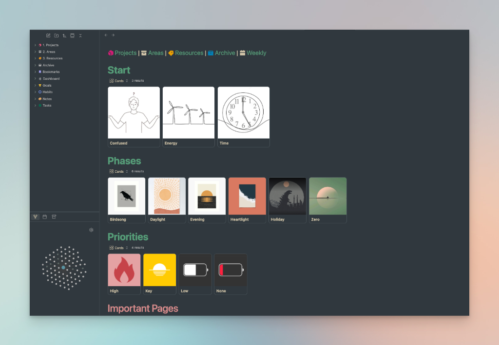

Advanced Obsidian Implementation
I use Obsidian far beyond simple note-taking — building interconnected knowledge bases, project management systems, and fully customized productivity environments. My approach combines linked thinking with powerful organizational frameworks to create dynamic, searchable repositories of information that grow more valuable over time.
Custom PARA Implementation
- Projects: Active workstreams with deadlines and deliverables tracked through linked notes
- Areas: Ongoing responsibilities organized with templates and recurring review systems
- Resources: Reference materials connected through bi-directional links and tags
- Archives: Completed work searchable and connected to active knowledge
Knowledge Base Architecture
- Interconnected notes with bi-directional links for emergent connections
- Custom templates for consistent note structure and metadata
- Dataview queries for dynamic dashboards and automated views
- Graph analysis to discover hidden relationships between concepts
Project Management Systems
- Kanban boards and task management within the vault
- Meeting notes automatically linked to projects and people
- Daily notes with templated sections and automatic backlinks
- Review workflows (weekly, monthly, quarterly) built into the system
Technical Implementation
- Community plugins configured for enhanced functionality
- CSS snippets for customized visual presentation
- Sync and backup strategies for vault protection
- Publishing workflows for knowledge sharing
Life Management Dashboard
My Obsidian setup includes a comprehensive life management dashboard featuring PARA navigation (Projects, Areas, Resources, Archive), phase-based categorization for time-of-day workflows (Birdsong, Daylight, Evening, etc.), and priority-based task management. The dashboard provides quick access to important pages and serves as a command center for daily productivity.
